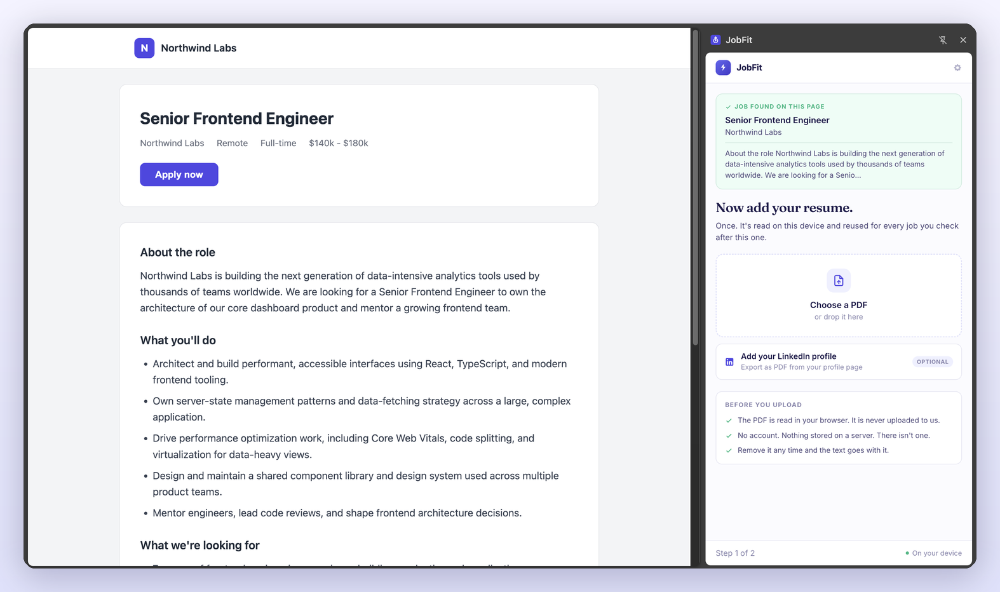
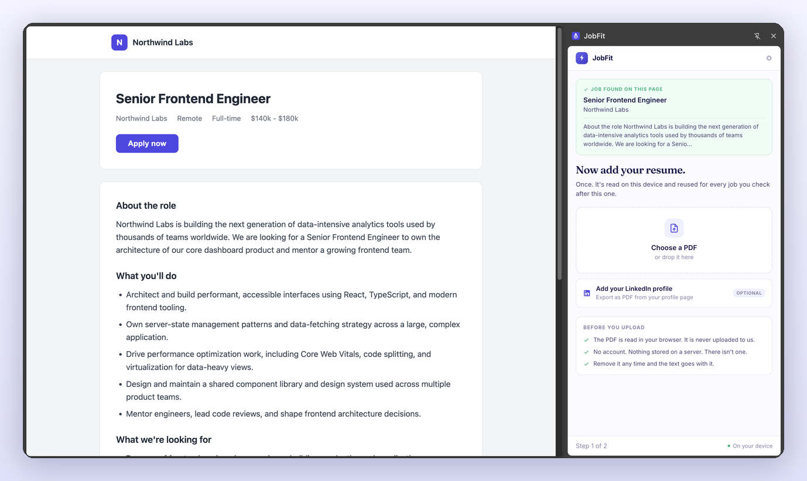
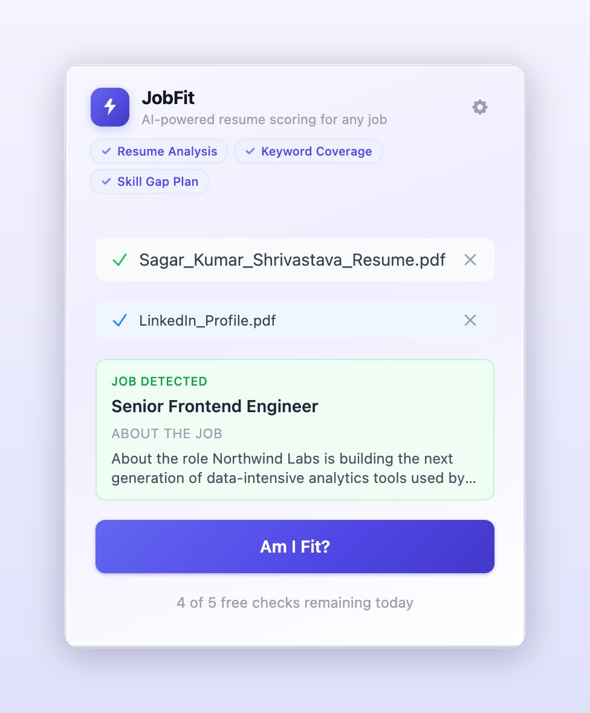
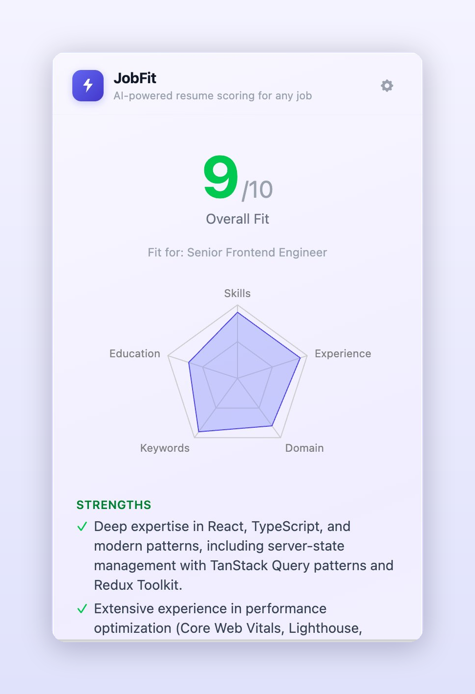
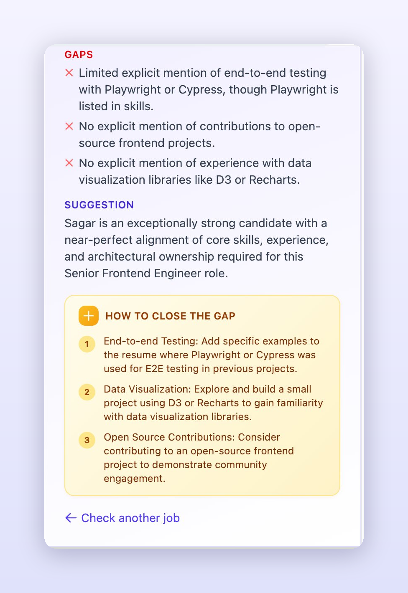
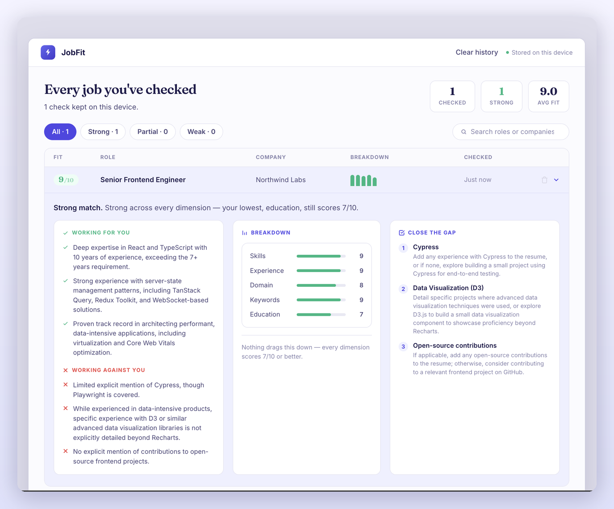

JobFit scores your resume against any job posting in one click — a clear breakdown and a plan to close the gap, in a side panel right next to the listing.

No copy-pasting, no dashboards, no account. Upload once, open a job, get an honest score.
Add your resume PDF a single time. It's read on your device and reused for every job you check after that — nothing is uploaded.
Land on a posting and click the JobFit icon. The panel opens beside the page and reads the role straight off it.

One click scores your resume against the open role in a few seconds.

A 1–10 score with a five-dimension breakdown — skills, experience, domain, keywords, education — and where you're strongest.

Specific, prioritised steps drawn from the actual posting and your actual resume — what to add, learn, or build.

Come back to any check — the fit, the breakdown, the plan. Re-checking a job you've already scored costs nothing and returns the same answer.

Most tools give you a number. JobFit shows you the reasoning — and what to do about it.
A fit score from 1 to 10 across five weighted dimensions — skills, experience, domain, keywords, and education — with the reasoning behind each one.
Not vague advice. Specific, prioritised steps grounded in the actual job description and your actual resume — what to learn, build, or add.
Past checks are saved on your device so you can return to any job you've scored. Re-checking the same job is instant and free. Clear it all any time.
Your resume is parsed on your device and never touches our servers — because we don't have any. Nothing stored remotely, nothing tracked, nothing sold.
Most resume tools upload your career history to a server you'll never see. JobFit takes a different path: everything happens inside your browser.
Add JobFit to Chrome and get an honest read on the next role you're eyeing.
Add to Chrome — Free